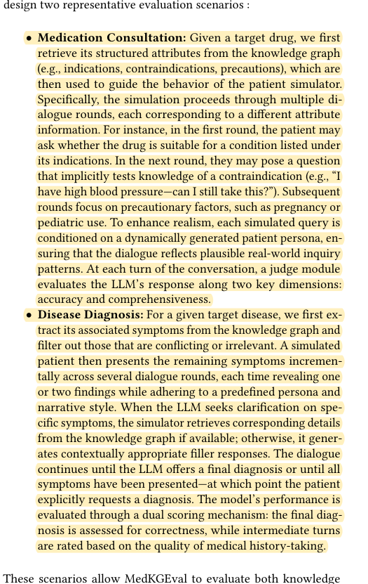
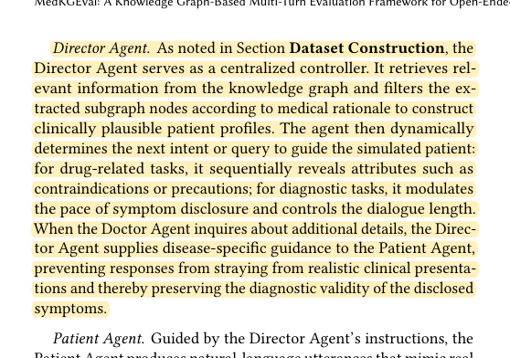
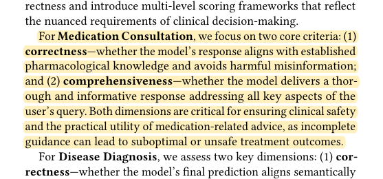

R12 · Virtual patients and OSCEs
MedKGEval already combines medication graphs, a patient, and an online judge
MedKGEval: A Knowledge Graph-Based Multi-Turn Evaluation Framework for Open-Ended Patient Interactions with Clinical LLMs
Yuechun Yu, Han Ying, Haoan Jin, Wenjian Jiang, Dong Xian, Binghao Wang, Zhou Yang, Mengyue Wu · 2025
arXiv:2510.12224; public manuscript; conference acceptance is not inferred from the header
What the study investigates
Static medical multiple-choice questions do not fully assess information gathering and application during multiround medication counselling. MedKGEval organizes simulated interaction and evaluation around a knowledge graph.
How it was studied
A Director selects case information from the graph and schedules disclosure; a Patient generates personality-conditioned questions; a Doctor is the model under test; and a Judge evaluates against graph knowledge. Medication tasks use 500 Chinese and 500 English subgraphs. Disease-diagnosis tasks are evaluated separately. Medication correctness and completeness each use a 0–2 scale.
Findings
The paper compares models' correctness, completeness, and history-taking behavior in multiround interaction. It illustrates why answering correctly and covering all required content should be measured separately. It is not a validity study of grading human pharmacy students.
Limits of the evidence
Knowledge graphs, multiple agents, judging, and staged disclosure are already combined. The local public manuscript contains template-like publication metadata; cite its arXiv identifier rather than infer a conference acceptance from its header.
How it informs DualGraph-OSCE
The Judge operates at each turn, and a Director ablation shows that generation control changes Doctor performance. “Controlled patient plus online judge” is therefore not a new contribution. DualGraph-OSCE concerns fixed human-learner stations: eligible learner evidence, actually delivered authorized prompts, and subsequent grading conditions are executed together. The diuretics and MTX counselling stations must not acquire new prescription-review penalties simply because the knowledge graph contains contraindications outside the approved task.
Where to cite it
Related work: a necessary pharmacy-specific technical predecessor. Measurement: distinguish correctness from completeness.
Possible manuscript wording
MedKGEval uses knowledge graphs for multiround medication consultation and evaluation. DualGraph-OSCE instead evaluates attributable human-learner behavior under fixed pharmacy-station rules.
[R12·1]This is a manuscript-specific paraphrase, not a quotation from the source. The excerpts below define what the citation supports. The proposed method and its expected benefits are not findings of the cited paper.
Source passages and precise locations
Page numbers refer to physical pages in the saved original PDF, including any repository cover sheets. Compilation page numbers are listed separately. Yellow highlighting marks the passage used for the argument.
R12-E1Medication consultation task
Original PDF page 4. Highlight compilation page 172. The highlight identifies the passage used here; consult the full original page for its context.

R12-E2Responsibilities of the Director, Patient, and Judge
Original PDF page 5. Highlight compilation page 173. The highlight identifies the passage used here; consult the full original page for its context.

R12-E3Correctness and completeness measures
Original PDF page 5. Highlight compilation page 173. The highlight identifies the passage used here; consult the full original page for its context.
